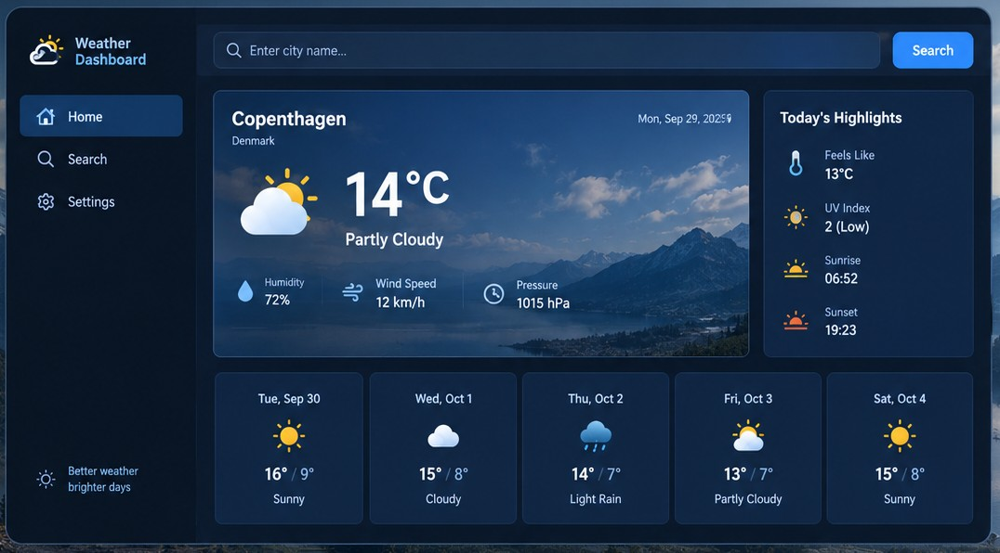

Weather Dashboard
A responsive dashboard that displays weather information in a clear and easy-to-read interface.
Project Overview
The Weather Dashboard was designed to present weather forecasts and conditions in a visually appealing way. The dashboard focuses on usability, allowing users to quickly view information such as temperature, weather conditions, and weekly forecasts.
Key Features
- Current Weather Display
- Weekly Forecast Overview
- Responsive Layout for Mobile and Desktop
- Clean and User-Friendly Interface
Technologies Used
Java, HTML, CSS
What I Learned
Through this project, I improved my skills in designing responsive interfaces and organizing information effectively. I practiced creating structured layouts with HTML, styling components with CSS, and applying basic Java concepts to model and manage weather data.